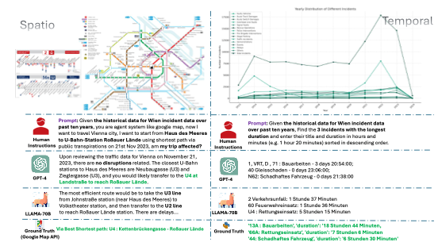
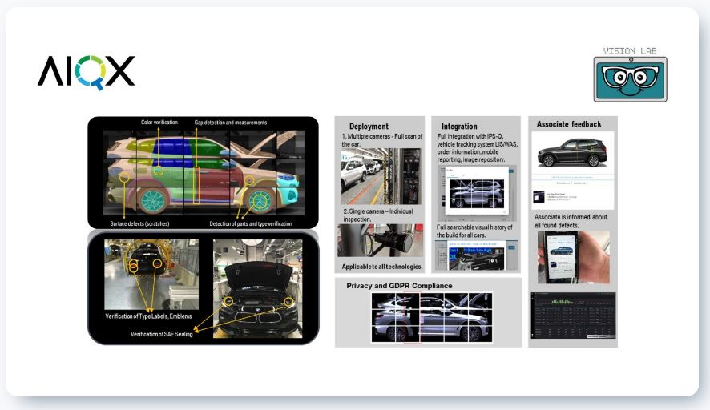
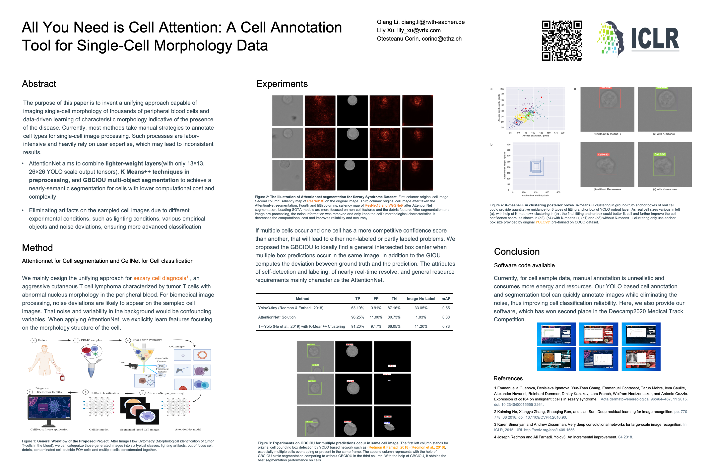
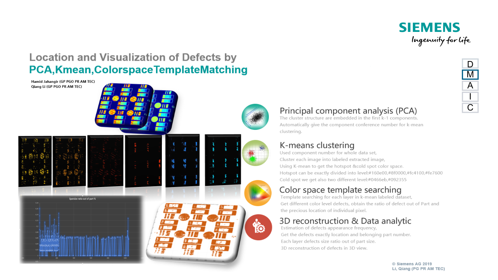

How LLMs React to Industrial Spatio-Temporal Data? Assessing Hallucination with a Novel Traffic Incident Benchmark Dataset
Qiang Li, Mingkun Tan, Xun Zhao, Dan Zhang, Daoan Zhang, Shengzhao Lei, Anderson S Chu, Lujun Li, Porawit Kamnoedboon
Accepted by 2025 Annual Conference of the Nations of the Americas Chapter of the Association for Computational Linguistics (NAACL'25), Full paper, 2025.
This study, originating from a real world industrial GenAI application, introduces a novel cross-lingual benchmark dataset comprising nearly 99,869 real traffic incident records from Vienna (2013-2023) to assess the robustness of state-of-the-art LLMs in the spatial and temporal domains for traffic incident classification. We then explored three hypotheses — sentence indexing, date-to-text conversion, and German-to-English translation — and incorporated Retrieval Augmented Generation (RAG) to further examine LLM hallucinations in both spatial and temporal domains.
Paper
Code
Conference Website
Dataset
.png)
XIMAGENET-12: An Explainable Visual Benchmark Dataset for Model Robustness Evaluation
Qiang Li, Dan Zhang, Shengzhao Lei, Xun Zhao, Porawit Kamnoedboon, WeiWei Li, Junhao Dong, Shuyan Li
Accepted by Synthetic Data for Computer Vision Workshop @ IEEE (CVPR'24), Full paper, 2024.
In this paper, we propose an explainable visual dataset, XIMAGENET-12, to evaluate the robustness of visual models. XIMAGENET-12 consists of over 200K images with 15,410 manual semantic annotations. Specifically, we deliberately selected 12 categories from ImageNet, representing objects commonly encountered in practical life. To simulate real-world situations, we incorporated six diverse scenarios, such as overexposure, blurring, and color changes, etc. We further develop a quantitative criterion for robustness assessment, allowing for a nuanced understanding of how visual models perform under varying conditions, notably in relation to the background.
Paper
Code
Conference Website
Dataset Download (126+ Download!)
.png)
Self-supervised Learning with Temporary Exact Solutions: Linear Projection
Evrim Ozmermer, Qiang Li
Accepted by IEEE 21st International Conference on Industrial Informatics (INDIN'23), Full paper, 2023.
In this paper, we present a self-supervised learning method for training, not limited to but especially visual transformers that are able to learn meaningful representations of images and videos without requiring large amounts of labeled data. Our method is based on using exact solutions of the representations that the model generates. It is shown that the model is able to learn useful features that can be later fine-tuned on industrial downstream tasks.
Paper
Code
Conference Website

Exploiting Interactivity and Heterogeneity for Sleep Stage Classification via Heterogeneous Graph Neural Network
Ziyu Jia, Youfang Lin, Yuhan Zhou, Xiyang Cai, Peng Zheng, Qiang Li, Jing Wang
Accepted by 2023 IEEE International Conference on Acoustics, Speech, and Signal Processing (ICASSP),Full paper, 2023.
In this paper, we propose a novel deep model SleepHGNN for sleep stage classification. The Heterogeneous Graph Transformer is applied to capture the interactivity and heterogeneity of the multimodal signals. To the best of our knowledge, this is the first attempt to leverage heterogeneous graph neural networks for sleep stage classification. Since the SleepHGNN is a universal framework for the graph-level classification task based on the heterogeneous graph, we will generalize model to other domains like protein classification and molecular graph classification including anticancer chemical compound classification in the future.
Paper
Code
Conference Website

Continual learning on deployment pipelines for Machine Learning Systems
Qiang Li, Chongyu Zhang
Accepted by The Conference on Neural Information Processing Systems (NeurIPS), DMML Workshop, 2022.
In this work, we presented a comparison of various solutions for the deployment of machine learning systems, includes different layers of automation from highly manual model training and deployment to an automated continuous integration workflow. We proposed the evaluation metrics in practice and described how real-world requirements differ from more academic settings.
Livestream on NeurIPS2022
Poster
Paper on arxiv
ResearchGate
Workshop Website
{kind=link}

Explainable AI: Object Recognition With Help From Background
Raza Hashmi, Qiang Li
Accepted by The International Conference on Learning Representations (ICLR), CSS Workshop, 2022.
This work explores how backgrounds might help in object recognition tasks in depth. Our project is fascinated by the baseline work done by Xiao et al. in their noise or signal paper.
Website
Blogs
Camera ready video of presentation on ICLR2022
Dataset on Kaggle (184+ Download!)

AI Quality Next - BMW Group - Computer Vision project
Computer Vision Engineer: Qiang Li
AIQX provides a platform to integrate machine learning & deep learning algorithms for visual inspections directly into the production processes. Creation of a central standard for the implementation of AI for quality inspections in the global production system. AI provides far more robust algorithms and opens new areas of defect detection and order verification for manufacturing.
Youtube:Artificial Intelligence at the BMW Group
Youtube:BMW Factory – Integration of A.I. in the Production Line
Published materials about our AIQX Project & Usecases in News and Major Media! Won BMW Q-Award*
Our AIQX Project & Usecases in CNBC News*

All You Need Is Cell Attention: A Cell Annotation Tool for Single-Cell Morphology Data
Qiang Li*, Corin Otesteanu, Lily Xu
Accepted by The International Conference on Learning Representations (ICLR), Workshop on AI for Public Health, 2021.
PDF
Code/Software

Cell Morphology Based Diagnosis of Cancer using Convolutional Neural Networks: CellNet
Qiang Li, Yiran Xing, Tianwei Lan, ChenYu Tian, Ying Chen
Won Challenge on Medical Track of AI in Public Healthcare of DeeCamp 2020.
Website
Code/Models

Localization and visualization of defects by PCA, KMeans, Colorspace Template Matching for Additive Manufacturing
Hamid Jahangir, Qiang Li
Invited Talk on International Conference on Additive Manufacturing (ICAM), 2020.
Slides
Software

GPT-3 industry survey and applied scenarios
Qiyi Ye, Qiang Li
Designed 3 GPT-based generative model on real scenario at Sinovation Ventures AI Institute （创新工场）, 2020.
Code/GPT generative models
Slides